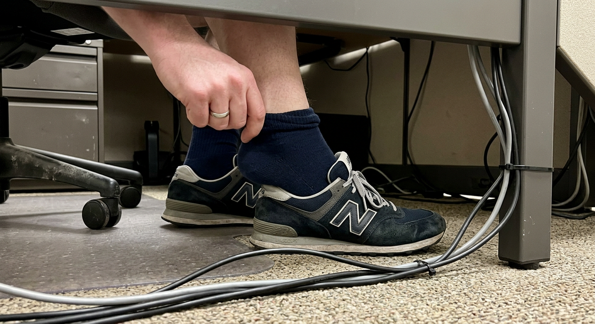

Draft 9 · Attack Self-Diagnosis (Expr 9)
R2: Moisture/Sweat
Soft is what makes socks uncomfortable.
Not "can be."
Is.
The discomfort you feel by mid-afternoon — the dampness, the heat, the need to adjust — that's not random.
That's causation.
Soft fibers hold onto moisture instead of releasing it.
Every hour, the moisture builds.
Your feet keep sweating. The socks keep absorbing. Nothing escapes.
By 3pm you're not wearing socks anymore.
You're wearing warm, wet fabric sealed against your skin.
And you've been blaming your shoes.
Blaming your feet.
Blaming the brand.
But the brand wasn't the variable.
The softness was.
Every soft sock does this.
It's physics, not quality control.
Warum die weichsten Socken die schlechtesten für deine Füße sind: matandvics.com/pages/lp01
See more

🖐️
The 3pm Adjustment
Run generate_lp01_images.py to create
🎨
Raw iPhone photo taken to show a friend. A hand reaching down toward a sock-covered foot under a desk — about to pull up or adjust the sock that's slipping down. Office fluorescent lighting, slightly dim under the desk. Cables, desk legs, shoes visible. This is NOT a content photo — this is 'fixing my sock again' energy. Under-desk perspective, awkward angle, the universal mid-afternoon sock adjustment. Shot one-handed while reaching. Authentic office sock frustration captured.
matandvics.com
Warum die weichsten Socken die schlechtesten für deine Füße sind